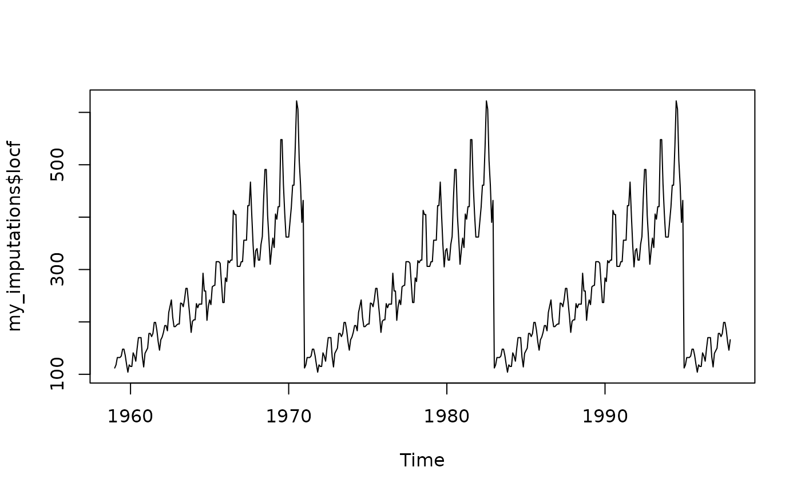
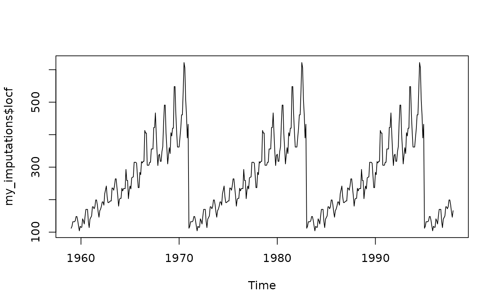

Function to get imputations from methods compared by kssa
Arguments
- x_ts
A ts object with missing data to be imputed
- methods
A string or string vector indicating the method or methods You can choose between the following:
"all" - get imputed values for all methods - Default
"auto.arima" - State space representation of an ARIMA model
"StructTS" - State space representation of a structural model
"seadec" - Seasonal decomposition with Kalman smoothing
"linear_i" - Linear interpolation
"spline_i" - Spline interpolation
"stine_i" - Stineman interpolation
"simple_ma" - Simple moving average
"linear_ma" - Linear moving average
"exponential_ma" - Exponential moving average
"locf" - Last observation carried forward
"stl" - Seasonal and trend decomposition with Loess
For further details on these imputation methods please check packages
imputeTSandforecast- seed
Numeric. Any number
Examples
# \donttest{
# Example 1: Get imputed values for airgap_na_ts with the methods of
library("imputeTS")
library("kssa")
# Create 20% random missing data in tsAirgapComplete time series from imputeTS
airgap_na <- missMethods::delete_MCAR(as.data.frame(tsAirgapComplete), 0.2)
# Convert to time series object
airgap_na_ts <- ts(airgap_na, start = c(1959, 1), end = c(1997, 12), frequency = 12)
my_imputations <- get_imputations(airgap_na_ts, methods = "all")
# my_imputations contains the imputed time series with all methods.
# Access it and choose the one from the best method for your purposes
my_imputations$seadec
#> Jan Feb Mar Apr May Jun Jul Aug
#> 1959 112.0000 118.0000 132.0000 121.8161 122.5338 135.0000 143.6387 148.0000
#> 1960 115.0000 126.0000 141.0000 135.0000 125.0000 149.0000 170.0000 170.0000
#> 1961 145.0000 150.0000 178.0000 163.0000 172.0000 178.0000 199.0000 208.2246
#> 1962 171.0000 180.0000 193.0000 181.0000 183.0000 218.0000 231.8642 238.5358
#> 1963 196.0000 196.0000 236.0000 235.0000 232.9514 243.0000 261.2628 272.0000
#> 1964 204.0000 207.3259 233.7060 227.0000 234.0000 264.0000 302.0000 293.0000
#> 1965 242.0000 233.0000 267.0000 269.0000 283.8665 315.0000 332.4422 347.0000
#> 1966 284.0000 282.1700 317.0000 313.0000 333.4567 374.0000 413.0000 405.0000
#> 1967 315.0000 301.0000 356.0000 348.0000 355.0000 422.4722 465.0000 467.0000
#> 1968 340.0000 318.0000 361.6071 350.9482 363.0000 435.0000 491.0000 505.0000
#> 1969 360.0000 342.0000 406.0000 396.0000 420.0000 472.0000 509.5248 559.0000
#> 1970 396.2668 391.0000 419.0000 435.8195 472.0000 535.0000 622.0000 576.1353
#> 1971 112.0000 118.0000 132.0000 115.1461 113.5906 135.0000 152.5197 148.0000
#> 1972 115.0000 126.0000 141.0000 135.0000 125.0000 149.0000 170.0000 170.0000
#> 1973 145.0000 150.0000 178.0000 163.0000 172.0000 178.0000 199.0000 204.4666
#> 1974 171.0000 180.0000 193.0000 181.0000 183.0000 218.0000 244.6848 242.9028
#> 1975 196.0000 196.0000 236.0000 235.0000 233.7795 243.0000 270.1709 272.0000
#> 1976 204.0000 206.1289 232.5848 227.0000 234.0000 264.0000 302.0000 293.0000
#> 1977 242.0000 233.0000 267.0000 269.0000 284.2532 315.0000 338.5113 347.0000
#> 1978 284.0000 281.5693 317.0000 313.0000 333.7859 374.0000 413.0000 405.0000
#> 1979 315.0000 301.0000 356.0000 348.0000 355.0000 417.8134 465.0000 467.0000
#> 1980 340.0000 318.0000 362.0842 352.6902 363.0000 435.0000 491.0000 505.0000
#> 1981 360.0000 342.0000 406.0000 396.0000 420.0000 472.0000 512.5099 559.0000
#> 1982 396.1781 391.0000 419.0000 437.0754 472.0000 535.0000 622.0000 577.3057
#> 1983 112.0000 118.0000 132.0000 116.7304 114.5004 135.0000 154.2875 148.0000
#> 1984 115.0000 126.0000 141.0000 135.0000 125.0000 149.0000 170.0000 170.0000
#> 1985 145.0000 150.0000 178.0000 163.0000 172.0000 178.0000 199.0000 205.3053
#> 1986 171.0000 180.0000 193.0000 181.0000 183.0000 218.0000 249.2391 245.4490
#> 1987 196.0000 196.0000 236.0000 235.0000 233.8759 243.0000 274.5967 272.0000
#> 1988 204.0000 206.6856 232.3747 227.0000 234.0000 264.0000 302.0000 293.0000
#> 1989 242.0000 233.0000 267.0000 269.0000 284.2532 315.0000 347.6540 347.0000
#> 1990 284.0000 282.8018 317.0000 313.0000 333.7806 374.0000 413.0000 405.0000
#> 1991 315.0000 301.0000 356.0000 348.0000 355.0000 407.1243 465.0000 467.0000
#> 1992 340.0000 318.0000 358.7862 351.5958 363.0000 435.0000 491.0000 505.0000
#> 1993 360.0000 342.0000 406.0000 396.0000 420.0000 472.0000 548.2038 559.0000
#> 1994 396.3698 391.0000 419.0000 436.1977 472.0000 535.0000 622.0000 583.5911
#> 1995 112.0000 118.0000 132.0000 107.6087 101.0316 135.0000 177.5561 148.0000
#> 1996 115.0000 126.0000 141.0000 135.0000 125.0000 149.0000 170.0000 170.0000
#> 1997 145.0000 150.0000 178.0000 163.0000 172.0000 178.0000 199.0000 211.1349
#> Sep Oct Nov Dec
#> 1959 136.0000 119.0000 104.0000 118.0000
#> 1960 158.0000 133.0000 114.0000 142.1360
#> 1961 184.0000 163.3502 136.3023 166.0000
#> 1962 209.0000 191.0000 163.0066 194.0000
#> 1963 237.0000 211.0000 180.0000 201.0000
#> 1964 259.0000 232.8719 203.0000 229.0000
#> 1965 312.0000 274.0000 237.0000 278.0000
#> 1966 355.0000 306.0000 271.0000 306.0000
#> 1967 404.0000 347.0000 305.0000 336.0000
#> 1968 404.0000 359.0000 310.0000 337.0000
#> 1969 497.2289 430.0500 362.0000 405.0000
#> 1970 508.0000 461.0000 390.0000 263.6930
#> 1971 136.0000 119.0000 104.0000 118.0000
#> 1972 158.0000 133.0000 114.0000 138.4542
#> 1973 184.0000 168.0690 149.4396 166.0000
#> 1974 209.0000 191.0000 171.4304 194.0000
#> 1975 237.0000 211.0000 180.0000 201.0000
#> 1976 259.0000 231.4383 203.0000 229.0000
#> 1977 312.0000 274.0000 237.0000 278.0000
#> 1978 355.0000 306.0000 271.0000 306.0000
#> 1979 404.0000 347.0000 305.0000 336.0000
#> 1980 404.0000 359.0000 310.0000 337.0000
#> 1981 494.5870 428.0352 362.0000 405.0000
#> 1982 508.0000 461.0000 390.0000 263.3428
#> 1983 136.0000 119.0000 104.0000 118.0000
#> 1984 158.0000 133.0000 114.0000 138.3839
#> 1985 184.0000 167.7847 150.1203 166.0000
#> 1986 209.0000 191.0000 172.0633 194.0000
#> 1987 237.0000 211.0000 180.0000 201.0000
#> 1988 259.0000 230.6751 203.0000 229.0000
#> 1989 312.0000 274.0000 237.0000 278.0000
#> 1990 355.0000 306.0000 271.0000 306.0000
#> 1991 404.0000 347.0000 305.0000 336.0000
#> 1992 404.0000 359.0000 310.0000 337.0000
#> 1993 480.5076 416.4267 362.0000 405.0000
#> 1994 508.0000 461.0000 390.0000 262.6848
#> 1995 136.0000 119.0000 104.0000 118.0000
#> 1996 158.0000 133.0000 114.0000 140.2962
#> 1997 184.0000 158.4202 139.2727 166.0000
plot.ts(my_imputations$seadec)
 # }
# Example 2: Get imputed values for airgap_na_ts using only a subset of algorithms
library("imputeTS")
library("kssa")
# Create 20% random missing data in tsAirgapComplete time series from imputeTS
airgap_na <- missMethods::delete_MCAR(as.data.frame(tsAirgapComplete), 0.2)
# Convert to time series object
airgap_na_ts <- ts(airgap_na, start = c(1959, 1), end = c(1997, 12), frequency = 12)
my_imputations <- get_imputations(airgap_na_ts, methods = c("linear_i", "locf"))
# my_imputations contains the imputed time series with all applied
# methods (locf and linear interpolation).
# Access it and choose the one from the best method for your purposes
my_imputations$locf
#> Jan Feb Mar Apr May Jun Jul Aug Sep Oct Nov Dec
#> 1959 112 118 132 132 132 135 148 148 136 119 104 118
#> 1960 115 115 141 135 125 149 170 170 170 133 114 140
#> 1961 145 150 178 178 172 178 199 199 184 162 146 166
#> 1962 171 180 193 193 183 218 230 242 209 191 191 194
#> 1963 196 196 236 235 229 243 264 264 237 211 180 201
#> 1964 204 204 235 227 234 234 234 293 259 259 203 229
#> 1965 242 233 267 269 270 315 315 315 312 274 237 237
#> 1966 284 277 317 313 318 318 413 405 405 306 306 306
#> 1967 315 315 356 356 356 422 422 467 404 347 305 336
#> 1968 340 318 318 348 363 435 491 491 404 359 310 337
#> 1969 360 342 406 396 420 420 548 548 463 407 362 362
#> 1970 362 391 419 461 461 535 622 606 508 461 390 432
#> 1971 112 118 132 132 132 135 148 148 136 119 104 118
#> 1972 115 115 141 135 125 149 170 170 170 133 114 140
#> 1973 145 150 178 178 172 178 199 199 184 162 146 166
#> 1974 171 180 193 193 183 218 230 242 209 191 191 194
#> 1975 196 196 236 235 229 243 264 264 237 211 180 201
#> 1976 204 204 235 227 234 234 234 293 259 259 203 229
#> 1977 242 233 267 269 270 315 315 315 312 274 237 237
#> 1978 284 277 317 313 318 318 413 405 405 306 306 306
#> 1979 315 315 356 356 356 422 422 467 404 347 305 336
#> 1980 340 318 318 348 363 435 491 491 404 359 310 337
#> 1981 360 342 406 396 420 420 548 548 463 407 362 362
#> 1982 362 391 419 461 461 535 622 606 508 461 390 432
#> 1983 112 118 132 132 132 135 148 148 136 119 104 118
#> 1984 115 115 141 135 125 149 170 170 170 133 114 140
#> 1985 145 150 178 178 172 178 199 199 184 162 146 166
#> 1986 171 180 193 193 183 218 230 242 209 191 191 194
#> 1987 196 196 236 235 229 243 264 264 237 211 180 201
#> 1988 204 204 235 227 234 234 234 293 259 259 203 229
#> 1989 242 233 267 269 270 315 315 315 312 274 237 237
#> 1990 284 277 317 313 318 318 413 405 405 306 306 306
#> 1991 315 315 356 356 356 422 422 467 404 347 305 336
#> 1992 340 318 318 348 363 435 491 491 404 359 310 337
#> 1993 360 342 406 396 420 420 548 548 463 407 362 362
#> 1994 362 391 419 461 461 535 622 606 508 461 390 432
#> 1995 112 118 132 132 132 135 148 148 136 119 104 118
#> 1996 115 115 141 135 125 149 170 170 170 133 114 140
#> 1997 145 150 178 178 172 178 199 199 184 162 146 166
plot.ts(my_imputations$locf)

# }
# Example 2: Get imputed values for airgap_na_ts using only a subset of algorithms
library("imputeTS")
library("kssa")
# Create 20% random missing data in tsAirgapComplete time series from imputeTS
airgap_na <- missMethods::delete_MCAR(as.data.frame(tsAirgapComplete), 0.2)
# Convert to time series object
airgap_na_ts <- ts(airgap_na, start = c(1959, 1), end = c(1997, 12), frequency = 12)
my_imputations <- get_imputations(airgap_na_ts, methods = c("linear_i", "locf"))
# my_imputations contains the imputed time series with all applied
# methods (locf and linear interpolation).
# Access it and choose the one from the best method for your purposes
my_imputations$locf
#> Jan Feb Mar Apr May Jun Jul Aug Sep Oct Nov Dec
#> 1959 112 118 132 132 132 135 148 148 136 119 104 118
#> 1960 115 115 141 135 125 149 170 170 170 133 114 140
#> 1961 145 150 178 178 172 178 199 199 184 162 146 166
#> 1962 171 180 193 193 183 218 230 242 209 191 191 194
#> 1963 196 196 236 235 229 243 264 264 237 211 180 201
#> 1964 204 204 235 227 234 234 234 293 259 259 203 229
#> 1965 242 233 267 269 270 315 315 315 312 274 237 237
#> 1966 284 277 317 313 318 318 413 405 405 306 306 306
#> 1967 315 315 356 356 356 422 422 467 404 347 305 336
#> 1968 340 318 318 348 363 435 491 491 404 359 310 337
#> 1969 360 342 406 396 420 420 548 548 463 407 362 362
#> 1970 362 391 419 461 461 535 622 606 508 461 390 432
#> 1971 112 118 132 132 132 135 148 148 136 119 104 118
#> 1972 115 115 141 135 125 149 170 170 170 133 114 140
#> 1973 145 150 178 178 172 178 199 199 184 162 146 166
#> 1974 171 180 193 193 183 218 230 242 209 191 191 194
#> 1975 196 196 236 235 229 243 264 264 237 211 180 201
#> 1976 204 204 235 227 234 234 234 293 259 259 203 229
#> 1977 242 233 267 269 270 315 315 315 312 274 237 237
#> 1978 284 277 317 313 318 318 413 405 405 306 306 306
#> 1979 315 315 356 356 356 422 422 467 404 347 305 336
#> 1980 340 318 318 348 363 435 491 491 404 359 310 337
#> 1981 360 342 406 396 420 420 548 548 463 407 362 362
#> 1982 362 391 419 461 461 535 622 606 508 461 390 432
#> 1983 112 118 132 132 132 135 148 148 136 119 104 118
#> 1984 115 115 141 135 125 149 170 170 170 133 114 140
#> 1985 145 150 178 178 172 178 199 199 184 162 146 166
#> 1986 171 180 193 193 183 218 230 242 209 191 191 194
#> 1987 196 196 236 235 229 243 264 264 237 211 180 201
#> 1988 204 204 235 227 234 234 234 293 259 259 203 229
#> 1989 242 233 267 269 270 315 315 315 312 274 237 237
#> 1990 284 277 317 313 318 318 413 405 405 306 306 306
#> 1991 315 315 356 356 356 422 422 467 404 347 305 336
#> 1992 340 318 318 348 363 435 491 491 404 359 310 337
#> 1993 360 342 406 396 420 420 548 548 463 407 362 362
#> 1994 362 391 419 461 461 535 622 606 508 461 390 432
#> 1995 112 118 132 132 132 135 148 148 136 119 104 118
#> 1996 115 115 141 135 125 149 170 170 170 133 114 140
#> 1997 145 150 178 178 172 178 199 199 184 162 146 166
plot.ts(my_imputations$locf)
